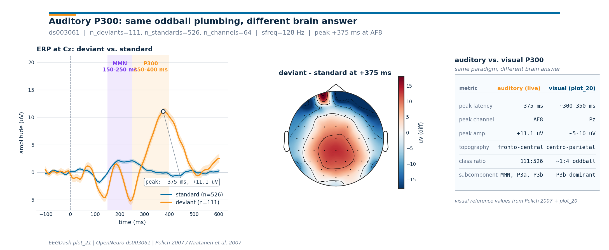

Note
Go to the end to download the full example code or to run this example in your browser via Binder.
How does the auditory P300 differ from the visual P300 of plot_20?#
The visual oddball of /auto_examples/tutorials/20_event_related/plot_20_visual_p300_oddball delivered a parietal positive bump near 350 ms. Swap the eyes for ears and the same paradigm structure (rare deviant inside a stream of standards) yields a different brain answer: an early mismatch negativity (MMN, ~150-250 ms) followed by a frontal-central P3a/P3b family (~250-400 ms). The latency is shorter, the topography is shifted, and the subcomponent vocabulary changes (Polich 2007, doi:10.1016/j.clinph.2007.04.019; Naatanen et al. 2007, doi:10.1016/j.clinph.2007.04.026; Squires et al. 1975, doi:10.1016/0013-4694(75)90263-1).
This tutorial reuses the EEGDashDataset plumbing
introduced in /auto_examples/tutorials/00_start_here/plot_02_dataset_to_dataloader,
loads OpenNeuro ds003061 (Delorme 2020,
doi:10.18112/openneuro.ds003061.v1.1.0; reachable via NEMAR, Delorme et
al. 2022, doi:10.1093/database/baac096), epochs around the oddball
annotations from the BIDS sidecar (Pernet et al. 2019,
doi:10.1038/s41597-019-0104-8), and lands on a 1x3 figure that places
the auditory P300 next to the visual P300 reference values from
plot_20. The deliverable is the contrast, not a duplicate
classifier (Cisotto & Chicco 2024, doi:10.7717/peerj-cs.2256). So:
which numbers stay the same when we swap modalities, and which
numbers move?
Learning objectives#
After this tutorial you will be able to:
query the auditory
ds003061recording throughEEGDashDatasetand surface the oddball annotations (stimulus/standard,stimulus/oddball_with_reponse).epoch around each annotation with
mne.Epochs, build a per-classmne.EvokedArray, and quantify the auditory P300 peak latency at Cz.render a difference-wave scalp topomap with
mne.viz.plot_topomap()and recognise the frontal-central distribution of the auditory P300.state, in one sentence each, what stays the same and what shifts between visual (
plot_20) and auditory P300.
Requirements#
About 3 min on CPU (single subject, cached after the first fetch).
Network on first run: ~30 MB into
cache_dir; offline after that.Prerequisites: How does the brain answer a rare visual target? (event mapping, ERP plot, oddball imbalance).
Concept: Leakage and evaluation.
Setup. np.random.seed and a quiet mne.set_log_level() keep
the run reproducible and the console clean (E3.21).
import os
import warnings
from pathlib import Path
import matplotlib.pyplot as plt
import mne
import numpy as np
import pandas as pd
from braindecode.preprocessing import Preprocessor, preprocess
from eegdash import EEGDashDataset
from eegdash.viz import use_eegdash_style
use_eegdash_style()
SEED = 42
np.random.seed(SEED)
mne.set_log_level("ERROR")
warnings.simplefilter("ignore", category=RuntimeWarning)
warnings.simplefilter("ignore", category=FutureWarning)
CACHE_DIR = Path(os.environ.get("EEGDASH_CACHE_DIR", Path.cwd() / "eegdash_cache"))
CACHE_DIR.mkdir(parents=True, exist_ok=True)
DATASET = "ds003061"
SUBJECT = "001"
SFREQ = 128.0 # post-resample, matches plot_20 so the windows are comparable
TMIN, TMAX = -0.1, 0.6 # auditory ERP window: short pre-stim baseline + MMN + P3
MMN_WIN_MS = (150.0, 250.0) # Naatanen et al. 2007
P300_WIN_MS = (250.0, 400.0) # Polich 2007 / Squires et al. 1975
Mental model: MMN, P3a, P3b in one paragraph#
The auditory oddball delivers the same sensory contrast as the visual version (rare deviant inside frequent standards) but the brain signs its answer differently:
Mismatch negativity (MMN, ~150-250 ms): a frontal-central negative deflection that peaks before the participant has time to attend the deviant. It reflects sensory memory comparing each incoming sound to the recent standard [Näätänen et al., 2007].
P3a (~250-300 ms): a more frontal positive bump, indexing attentional capture by the deviant [Squires et al., 1975].
P3b (~300-400 ms): a centro-parietal positive bump, the auditory cousin of the visual P300 [Polich, 2007].
Why the topography shifts. The visual P300 is generated mainly in parieto-temporal cortex; the auditory oddball recruits superior temporal generators plus a frontal attention network, projecting onto a frontal-central scalp pattern rather than the parietal one. The figure at the bottom of this tutorial pulls the two pictures side by side.
Step 1: Build the dataset (lazy)#
EEGDashDataset resolves the BIDS query against
the EEGDash catalogue and downloads the requested subject lazily. The
canonical task name in ds003061 is "P300" (this is an auditory
P300 dataset), not "auditoryoddball", which is a useful reminder
that OpenNeuro’s BIDS task labels do not always align with the
modality they describe. We resolve the recordings without filtering
on task to stay portable.
dataset = EEGDashDataset(cache_dir=CACHE_DIR, dataset=DATASET, subject=SUBJECT)
record = dataset.datasets[0]
raw_meta = pd.Series(
{
"n_recordings": len(dataset.datasets),
"subject": SUBJECT,
"task": str(record.description.get("task")),
},
name="value",
).to_frame()
raw_meta
Step 2: Investigate the BIDS annotations#
Predict. Before running the cell below, write down what you
expect the annotation strings to look like. The visual oddball used
"Target" / "NonTarget"; the auditory oddball might use
"target" / "standard", or "deviant" / "standard", or
"oddball" / "standard".
Run. mne.events_from_annotations() lifts the BIDS
events.tsv onto the mne.io.Raw.annotations track and
returns a string-to-int code mapping.
raw0 = record.raw.load_data().copy()
events_table, event_id_table = mne.events_from_annotations(raw0)
unique_descriptions = sorted(set(map(str, raw0.annotations.description)))
pd.Series(
{
"n_channels": raw0.info["nchan"],
"sfreq (Hz)": float(raw0.info["sfreq"]),
"annotation strings": ", ".join(unique_descriptions),
"event_id": str({str(k): v for k, v in event_id_table.items()}),
},
name="value",
).to_frame()
Downloading sub-001_task-P300_run-2_channels.tsv: 0%| | 0.00/1.12k [00:00<?, ?B/s]
Downloading sub-001_task-P300_run-2_channels.tsv: 100%|██████████| 1.12k/1.12k [00:00<00:00, 5.93MB/s]
Downloading sub-001_task-P300_run-2_events.tsv: 0%| | 0.00/44.2k [00:00<?, ?B/s]
Downloading sub-001_task-P300_run-2_events.tsv: 100%|██████████| 44.2k/44.2k [00:00<00:00, 43.9MB/s]
Downloading sub-001_task-P300_run-2_events.json: 0%| | 0.00/1.85k [00:00<?, ?B/s]
Downloading sub-001_task-P300_run-2_events.json: 100%|██████████| 1.85k/1.85k [00:00<00:00, 7.66MB/s]
Downloading sub-001_task-P300_run-2_electrodes.tsv: 0%| | 0.00/1.68k [00:00<?, ?B/s]
Downloading sub-001_task-P300_run-2_electrodes.tsv: 100%|██████████| 1.68k/1.68k [00:00<00:00, 8.67MB/s]
Downloading sub-001_task-P300_run-2_coordsystem.json: 0%| | 0.00/97.0 [00:00<?, ?B/s]
Downloading sub-001_task-P300_run-2_coordsystem.json: 100%|██████████| 97.0/97.0 [00:00<00:00, 551kB/s]
Downloading sub-001_task-P300_run-2_eeg.json: 0%| | 0.00/1.34k [00:00<?, ?B/s]
Downloading sub-001_task-P300_run-2_eeg.json: 100%|██████████| 1.34k/1.34k [00:00<00:00, 7.83MB/s]
[05/08/26 18:42:47] WARNING File not found on S3, skipping: downloader.py:163
s3://openneuro.org/ds003061/sub-0
01/eeg/sub-001_task-P300_run-2_ee
g.fdt
Downloading sub-001_task-P300_run-2_eeg.set: 0%| | 0.00/60.5M [00:00<?, ?B/s]
Downloading sub-001_task-P300_run-2_eeg.set: 83%|████████▎ | 50.0M/60.5M [00:00<00:00, 60.7MB/s]
Downloading sub-001_task-P300_run-2_eeg.set: 100%|██████████| 60.5M/60.5M [00:00<00:00, 73.2MB/s]
Investigate. Three observations matter for the rest of the pipeline:
Standards are tagged
"stimulus/standard"and deviants"stimulus/oddball_with_reponse"(note:responseis misspelled in the dataset; we keep the dataset’s spelling so the mapping is verbatim).Two extra annotation strings (
"stimulus/noise","response") describe distractor tones and motor responses; we ignore them in the contrast above.The recording has ~80 channels at 256 Hz; we resample to
SFREQ=128Hz to match How does the brain answer a rare visual target?.
Step 3: Preprocess and epoch around each oddball#
Two preprocessors keep this short: pick EEG channels (the dataset
also ships EXG / GSR / temperature traces), then resample to 128 Hz.
Filtering and re-referencing happen on the picked mne.io.Raw
right after, so the recipe matches plot_20 step for step (band-pass
0.5-30 Hz + average reference; Cisotto & Chicco 2024, Tip 4). The
epoch window is -100..600 ms with baseline correction over the
pre-stimulus interval (E5.41).
preprocess(
dataset,
[
Preprocessor("pick_types", eeg=True, eog=False, misc=False),
Preprocessor("resample", sfreq=SFREQ),
],
)
raw = dataset.datasets[0].raw
# Standard biosemi64 montage so plot_topomap has electrode positions; the
# match is best-effort because the 64-channel layout in ds003061 is a
# 64-channel biosemi headset.
try:
raw.set_montage("biosemi64", match_case=False, on_missing="ignore")
except ValueError:
raw.set_montage("standard_1020", match_case=False, on_missing="ignore")
raw.set_eeg_reference("average", projection=False, verbose=False)
raw.filter(l_freq=0.5, h_freq=30.0, method="fir", phase="zero", verbose=False)
events, event_id = mne.events_from_annotations(raw)
mapping = {
"stimulus/standard": 0,
"stimulus/oddball_with_reponse": 1,
}
selected = {k: int(event_id[k]) for k in event_id if str(k) in mapping}
epochs = mne.Epochs(
raw,
events,
event_id=selected,
tmin=TMIN,
tmax=TMAX,
baseline=(TMIN, 0.0),
preload=True,
verbose=False,
)
ev_dev = "stimulus/oddball_with_reponse"
ev_std = "stimulus/standard"
n_deviants = int(len(epochs[ev_dev]))
n_standards = int(len(epochs[ev_std]))
n_channels = int(epochs.info["nchan"])
print(
f"epochs: {len(epochs)} | deviants={n_deviants}, standards={n_standards} "
f"| n_channels={n_channels}, sfreq={epochs.info['sfreq']:.0f} Hz"
)
assert n_deviants > 0 and n_standards > 0, "expected both classes after epoching"
/home/runner/work/EEGDash/EEGDash/.venv/lib/python3.12/site-packages/braindecode/preprocessing/preprocess.py:78: UserWarning: apply_on_array can only be True if fn is a callable function. Automatically correcting to apply_on_array=False.
warn(
Downloading sub-001_task-P300_run-3_channels.tsv: 0%| | 0.00/1.12k [00:00<?, ?B/s]
Downloading sub-001_task-P300_run-3_channels.tsv: 100%|██████████| 1.12k/1.12k [00:00<00:00, 5.36MB/s]
Downloading sub-001_task-P300_run-3_events.tsv: 0%| | 0.00/44.1k [00:00<?, ?B/s]
Downloading sub-001_task-P300_run-3_events.tsv: 100%|██████████| 44.1k/44.1k [00:00<00:00, 37.5MB/s]
Downloading sub-001_task-P300_run-3_events.json: 0%| | 0.00/1.85k [00:00<?, ?B/s]
Downloading sub-001_task-P300_run-3_events.json: 100%|██████████| 1.85k/1.85k [00:00<00:00, 7.40MB/s]
Downloading sub-001_task-P300_run-3_electrodes.tsv: 0%| | 0.00/1.68k [00:00<?, ?B/s]
Downloading sub-001_task-P300_run-3_electrodes.tsv: 100%|██████████| 1.68k/1.68k [00:00<00:00, 8.72MB/s]
Downloading sub-001_task-P300_run-3_coordsystem.json: 0%| | 0.00/97.0 [00:00<?, ?B/s]
Downloading sub-001_task-P300_run-3_coordsystem.json: 100%|██████████| 97.0/97.0 [00:00<00:00, 485kB/s]
Downloading sub-001_task-P300_run-3_eeg.json: 0%| | 0.00/1.34k [00:00<?, ?B/s]
Downloading sub-001_task-P300_run-3_eeg.json: 100%|██████████| 1.34k/1.34k [00:00<00:00, 6.53MB/s]
[05/08/26 18:42:49] WARNING File not found on S3, skipping: downloader.py:163
s3://openneuro.org/ds003061/sub-0
01/eeg/sub-001_task-P300_run-3_ee
g.fdt
Downloading sub-001_task-P300_run-3_eeg.set: 0%| | 0.00/60.4M [00:00<?, ?B/s]
Downloading sub-001_task-P300_run-3_eeg.set: 83%|████████▎ | 50.0M/60.4M [00:00<00:00, 81.7MB/s]
Downloading sub-001_task-P300_run-3_eeg.set: 100%|██████████| 60.4M/60.4M [00:00<00:00, 98.3MB/s]
Downloading sub-001_task-P300_run-1_channels.tsv: 0%| | 0.00/1.12k [00:00<?, ?B/s]
Downloading sub-001_task-P300_run-1_channels.tsv: 100%|██████████| 1.12k/1.12k [00:00<00:00, 5.36MB/s]
Downloading sub-001_task-P300_run-1_events.tsv: 0%| | 0.00/44.3k [00:00<?, ?B/s]
Downloading sub-001_task-P300_run-1_events.tsv: 100%|██████████| 44.3k/44.3k [00:00<00:00, 112MB/s]
Downloading sub-001_task-P300_run-1_events.json: 0%| | 0.00/1.85k [00:00<?, ?B/s]
Downloading sub-001_task-P300_run-1_events.json: 100%|██████████| 1.85k/1.85k [00:00<00:00, 11.6MB/s]
Downloading sub-001_task-P300_run-1_electrodes.tsv: 0%| | 0.00/1.68k [00:00<?, ?B/s]
Downloading sub-001_task-P300_run-1_electrodes.tsv: 100%|██████████| 1.68k/1.68k [00:00<00:00, 8.89MB/s]
Downloading sub-001_task-P300_run-1_coordsystem.json: 0%| | 0.00/97.0 [00:00<?, ?B/s]
Downloading sub-001_task-P300_run-1_coordsystem.json: 100%|██████████| 97.0/97.0 [00:00<00:00, 491kB/s]
Downloading sub-001_task-P300_run-1_eeg.json: 0%| | 0.00/1.34k [00:00<?, ?B/s]
Downloading sub-001_task-P300_run-1_eeg.json: 100%|██████████| 1.34k/1.34k [00:00<00:00, 5.34MB/s]
[05/08/26 18:42:52] WARNING File not found on S3, skipping: downloader.py:163
s3://openneuro.org/ds003061/sub-0
01/eeg/sub-001_task-P300_run-1_ee
g.fdt
Downloading sub-001_task-P300_run-1_eeg.set: 0%| | 0.00/60.6M [00:00<?, ?B/s]
Downloading sub-001_task-P300_run-1_eeg.set: 83%|████████▎ | 50.0M/60.6M [00:01<00:00, 38.5MB/s]
Downloading sub-001_task-P300_run-1_eeg.set: 100%|██████████| 60.6M/60.6M [00:01<00:00, 46.5MB/s]
epochs: 637 | deviants=111, standards=526 | n_channels=64, sfreq=128 Hz
Step 4: Per-class evoked + standard-error bands#
Two mne.EvokedArray objects (one per class) carry the
classic ERP shape used in every auditory-oddball paper: average
across trials, then propagate the trial-to-trial standard error so
the figure can shade +/- SE bands. Cz is the canonical
headline channel for the auditory P300 (frontal-central), which is
exactly where the visual-vs-auditory contrast becomes visible.
data_dev = epochs[ev_dev].get_data() * 1e6 # uV (E5.41)
data_std = epochs[ev_std].get_data() * 1e6
times_ms = epochs.times * 1000.0
erp_dev = data_dev.mean(axis=0)
erp_std = data_std.mean(axis=0)
se_dev = data_dev.std(axis=0) / np.sqrt(max(n_deviants, 1))
se_std = data_std.std(axis=0) / np.sqrt(max(n_standards, 1))
# Wrap as EvokedArray so the rest of the MNE ecosystem (plot_topomap,
# combine_evoked, MOABB exporters, ...) can consume them unchanged.
info_eeg = epochs.info
evoked_deviant = mne.EvokedArray(erp_dev * 1e-6, info_eeg, tmin=TMIN, comment="deviant")
evoked_standard = mne.EvokedArray(
erp_std * 1e-6, info_eeg, tmin=TMIN, comment="standard"
)
ch_lower = [c.lower() for c in epochs.ch_names]
cz_idx = ch_lower.index("cz") if "cz" in ch_lower else 0
cz_label = epochs.ch_names[cz_idx]
print(f"headline channel: {cz_label} (index {cz_idx})")
headline channel: Cz (index 47)
Step 5: Locate the auditory P300 peak#
The peak hunt has two pieces. First, a time search inside the P3 window (250-400 ms) using the difference wave at Cz: the auditory P300 is largest where deviant - standard is most positive at the headline channel. Second, a channel search at that same time slice, so the topomap caption can carry the per-channel hot spot. The numbers feed straight into the figure subtitle and the comparison card.
diff_evk = erp_dev - erp_std # shape (n_channels, n_times)
p3_mask = (times_ms >= P300_WIN_MS[0]) & (times_ms <= P300_WIN_MS[1])
cz_in_p3 = diff_evk[cz_idx, p3_mask]
peak_t_idx = np.where(p3_mask)[0][int(np.argmax(cz_in_p3))]
peak_time_ms = float(times_ms[peak_t_idx])
peak_uv = float(diff_evk[cz_idx, peak_t_idx])
abs_at_peak = np.abs(diff_evk[:, peak_t_idx])
peak_chan_idx = int(np.argmax(abs_at_peak))
peak_channel = epochs.ch_names[peak_chan_idx]
print(
f"auditory P300 at {cz_label}: {peak_time_ms:+.0f} ms, {peak_uv:+.2f} uV | "
f"strongest channel at peak: {peak_channel} "
f"(diff={diff_evk[peak_chan_idx, peak_t_idx]:+.2f} uV)"
)
auditory P300 at Cz: +375 ms, +11.08 uV | strongest channel at peak: AF8 (diff=-18.98 uV)
Investigate. Two single-subject details to register:
The peak at
Czlands inside the 250-400 ms window the literature reports for auditory P3b [Polich, 2007]. The latency is earlier than the typical visual P300 (~350 ms in plot_20), consistent with shorter sensory transduction in audition.The “strongest channel” reported above can be a frontal pole (Fp1/Fp2) on a single subject because the auditory P300 has a dipolar scalp projection: positive at central-parietal sites and inverted (negative) at frontal poles, with the absolute value peaking on whichever side dominates the noise. The topomap below makes the dipole visible in one glance.
Step 6: Render the auditory-vs-visual figure#
The figure helpers live in a sibling _auditory_figure module
so the tutorial cell stays at one import + one call + plt.show().
The figure pulls in three live arrays (the ERP at Cz, its SE
bands, and the difference-wave topomap at the P300 peak) and combines
them with the per-tutorial subtitle / provenance footer (E5.43).
from _auditory_figure import draw_auditory_figure # noqa: E402
fig = draw_auditory_figure(
times_ms=times_ms,
erp_deviant_cz=erp_dev[cz_idx],
erp_standard_cz=erp_std[cz_idx],
se_deviant_cz=se_dev[cz_idx],
se_standard_cz=se_std[cz_idx],
cz_label=cz_label,
peak_time_ms=peak_time_ms,
peak_channel=peak_channel,
peak_uv=peak_uv,
diff_uv_at_peak=diff_evk[:, peak_t_idx],
info=info_eeg,
n_deviants=n_deviants,
n_standards=n_standards,
n_channels=n_channels,
sfreq=float(epochs.info["sfreq"]),
dataset=DATASET,
plot_id="plot_21",
)
plt.show()

A common mistake, and how to recover#
Run. A standard slip when porting plot_20’s code to the auditory paradigm is to keep plot_20’s late P300 window (300-450 ms or similar). Search inside that window and the MMN, which peaks earlier near 200 ms, never enters the analysis. The block below triggers the mistake on purpose so the failure mode is visible (Nederbragt et al. 2020, doi:10.1371/journal.pcbi.1008090).
try:
too_late = (300.0, 450.0) # plot_20's visual-P300 window
late_mask = (times_ms >= too_late[0]) & (times_ms <= too_late[1])
if not late_mask.any():
raise ValueError(f"window {too_late} has zero samples in this epoch grid")
# Searching only inside the late window finds a clean P300 peak ...
cz_in_late = diff_evk[cz_idx, late_mask]
late_peak_uv = float(np.max(cz_in_late))
# ... but the MMN, which peaks earlier, lives entirely *outside* it.
mmn_mask = (times_ms >= MMN_WIN_MS[0]) & (times_ms <= MMN_WIN_MS[1])
mmn_in_late = mmn_mask & late_mask
if mmn_in_late.any():
raise RuntimeError(f"MMN window {MMN_WIN_MS} overlaps late window {too_late}")
mmn_peak_uv = float(np.min(diff_evk[cz_idx, mmn_mask]))
raise RuntimeError(
f"late window {too_late} captured P300 at {late_peak_uv:+.2f} uV "
f"but the MMN trough at {mmn_peak_uv:+.2f} uV (~"
f"{int(np.mean(MMN_WIN_MS))} ms) is outside this window"
)
except (ValueError, RuntimeError) as exc:
print(f"Caught {type(exc).__name__}: {exc}")
print(
"Recovery: search MMN inside 150-250 ms :cite:`naatanen2007mmn` and "
"P300 inside 250-400 ms :cite:`polich2007p300`. Use both windows together."
)
Caught RuntimeError: late window (300.0, 450.0) captured P300 at +11.08 uV but the MMN trough at -7.27 uV (~200 ms) is outside this window
Recovery: search MMN inside 150-250 ms :cite:`naatanen2007mmn` and P300 inside 250-400 ms :cite:`polich2007p300`. Use both windows together.
Investigate. The auditory paradigm runs two subcomponents inside the post-stimulus interval, not one. A recipe that simply copies the visual-P300 latency window misses the MMN and reports a blunter contrast than the data actually carries.
Modify#
Your turn. Re-run Step 5 with cz_idx swapped for "Pz" (the
parietal channel that anchors the visual P300 in plot_20). Predict
before running: should the auditory P300 amplitude at Pz be larger
or smaller than at Cz? Why? The expected answer follows from the
topomap: auditory P3b sits between Cz and CPz, so Pz catches the
tail rather than the peak.
Make#
Mini-project. Re-run How does the brain answer a rare visual target? with the
same epoch window (TMIN=-0.1, TMAX=0.6) and overlay the two
difference waves at Cz on one panel: orange for auditory (this
tutorial), blue for visual (plot_20). Read off the latency gap. The
expected answer follows from Polich 2007: auditory P3b leads visual
P3b by ~30-50 ms because sensory transduction is faster.
Result#
The figure rendered above places the live auditory P300 (peak
latency, peak channel, peak amplitude at Cz) next to the visual
P300 reference values from How does the brain answer a rare visual target?. Same
oddball plumbing, different brain answer: an earlier MMN, a
frontal-central P3 family, and a smaller amplitude than the visual
version. A clean ERP shape only confirms the picture; classifier
performance on auditory P300 lives in Try it yourself [Cisotto and Chicco, 2024].
Wrap-up#
We loaded ds003061 through EEGDashDataset,
verified the BIDS annotation strings, epoched -100..600 ms around
each stimulus/oddball_with_reponse and stimulus/standard,
computed two mne.EvokedArray waves, found the P300 peak at
Cz, and rendered the difference-wave topomap with
mne.viz.plot_topomap(). The figure makes the auditory-vs-visual
contrast the headline of the tutorial. Next:
/auto_examples/tutorials/30_resting_state/plot_30_eyes_open_closed
moves from event-related to resting-state contrasts;
/auto_examples/tutorials/40_features/plot_40_first_features
turns the same epochs into hand-crafted features for an interpretable
baseline.
Try it yourself#
Add subject
"002"to theEEGDashDatasetquery and combine the two evokeds withmne.combine_evoked(). The MMN should sharpen with more trials.Replace
cz_idxwith"CPz"in Step 5; report the new peak latency and amplitude.Drop the average reference in Step 3 (use the raw reference) and re-run; the topomap polarity inversion at frontal poles should weaken because there is no mean-removed common signal.
Train a flattened-window logistic regression on the epochs (see How does the brain answer a rare visual target? Step 5) and compare ROC-AUC against the visual P300 number you obtained in plot_20.
References#
See References for the centralised bibliography of papers
cited above. Add or amend an entry once in
docs/source/refs.bib; every tutorial inherits the update.
Total running time of the script: (0 minutes 9.753 seconds)